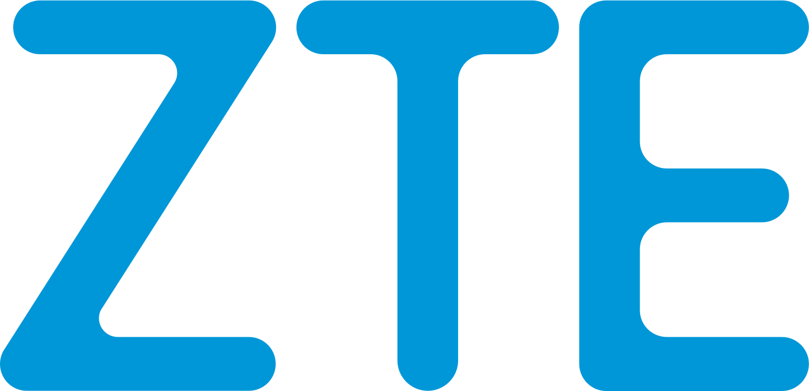
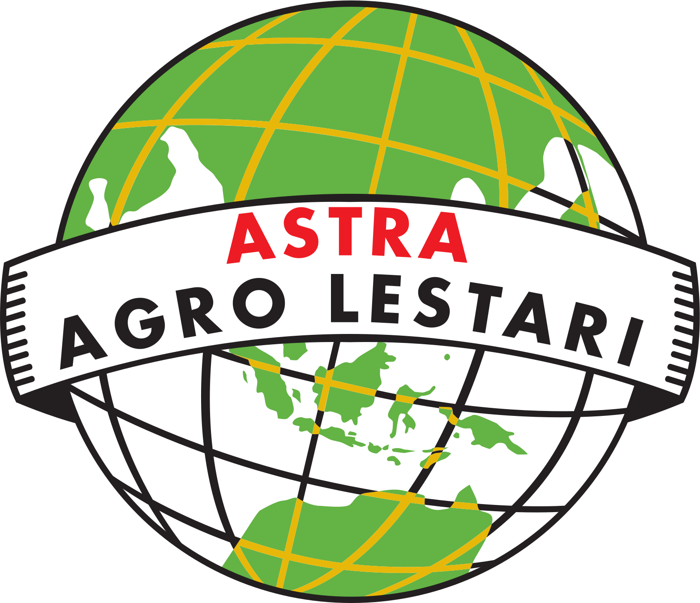

Bagus Dwi PermanaEngineering Operations Leader · Bekasi, Indonesia
SAP HV & LV authorised person
Mission-critical infrastructure, kept running.
Twelve years across hyperscale data centers, high-voltage plant and industrial automation. The tools on this site are the ones I use; the numbers on this page are the ones I have published.
01 / Career
Five employers on one bus.
Each feeder carried a different load. Hover a row and its breaker closes on the drawing.
- #

ZTE Corporation · 2011 – 2014Senior design engineer, industrial power · network design · telecom site engineering · commissioning→ - #

Astra Agro Lestari · 2014 – 2018Automation & control lead · 7-mill automation scale-up · SCADA / BMS · 31 mills multi-site ops · ALEXA award→ - #Cargill Indonesia · 2018 – 2020AEI engineer, end-to-end delivery · electrical maintenance systems · design · commissioning and handover→
- #

 Amazon Web Services · 2020 – 2022Senior DCEO, hyperscale operations · CGK build · critical infrastructure ops · global standards · service award 2021→
Amazon Web Services · 2020 – 2022Senior DCEO, hyperscale operations · CGK build · critical infrastructure ops · global standards · service award 2021→ - #Pure Data Centres · 2022 – presentEngineering operations manager · live ops · SAP HV & LV authority · mission-critical live DC operations→
02 / Results
Readouts, not adjectives.
What the sites I ran actually recorded. Each is an instrument reading on the drawing.
- #R.0191 % team retentionAgainst an industry average near 82 %→
- #R.02US$40–50K typical annual OPEX savingVendor contracts, predictive maintenance, energy→
- #R.03100 % SLA and work-order complianceZero SLA breaches through structured escalation and root-cause analysis→
- #R.0497 % reduction in false alarmsTiered alarm protocols and automated response→
- Operational record
- #O.01Zero LTIPermit-to-work discipline, risk assessment, safety culture→
- #O.02Zero customer-impacting outageEvery unplanned trip contained by N+1 / 2N and disciplined incident response→
- #O.03Hundreds of HV/MV switching operations, zero arc flashMOP, PTW and live-line safety as senior authorised person→
- #O.04PUE below 1.5 in a 30 °C+ tropical climateCooling plant optimisation, airflow management, raised setpoints→
- #O.05ISO 27001 certified siteGap analysis, control implementation, annual surveillance audits→
- #O.06OPEX forecast within 2 % varianceActuals vs forecast across maintenance, energy and contracts→
03 / Case studies
Three problems, written down.
Method first, number second.
Team retention strategy91 % retention
- Career development paths per role
- Recognition programmes tied to the SLA record
- Work-life rosters that survive incidents
OPEX optimisation frameworkUS$40–50K a year, typical
- Vendor contract consolidation
- Predictive maintenance where the data supports it
- Energy setpoints raised with the thermal margin measured
Alarm management overhaul97 % fewer false alarms
- Tiered alarm protocols per ISA-18.2
- Automated first response on known signatures
- Operators see actionable alerts only
04 / About
Systematic, measurable, sustained.
An engineering operations manager who turns under-performing sites into measured ones, and keeps them there.
Competencies
- Data center operations
- Critical infrastructure
- OPEX management
- Team leadership
- Process optimisation
- Vendor management
Authorisations
- AK3L — Indonesia electrical safety expert
- CDFOM — data centre facilities operation manager
- L6 competent manager, Ministry of Energy
- IOSH Managing Safely
- HV, LV and senior authorised person
05 / Contact
Let's talk engineering.
Questions about an article, a calculator or the engineering behind them are welcome.
Fig. 0.0 — a career drawn as a single-line diagram. Scroll: the camera follows.
Fig. 0.1 — five feeders on one bus, 2011 to present. Hover a row: its breaker closes.
Fig. 0.2 — operational readouts, as published on this page.
Fig. 0.3 — the authorisations that let one person switch live HV.
Fig. 0.0 — the whole line again.